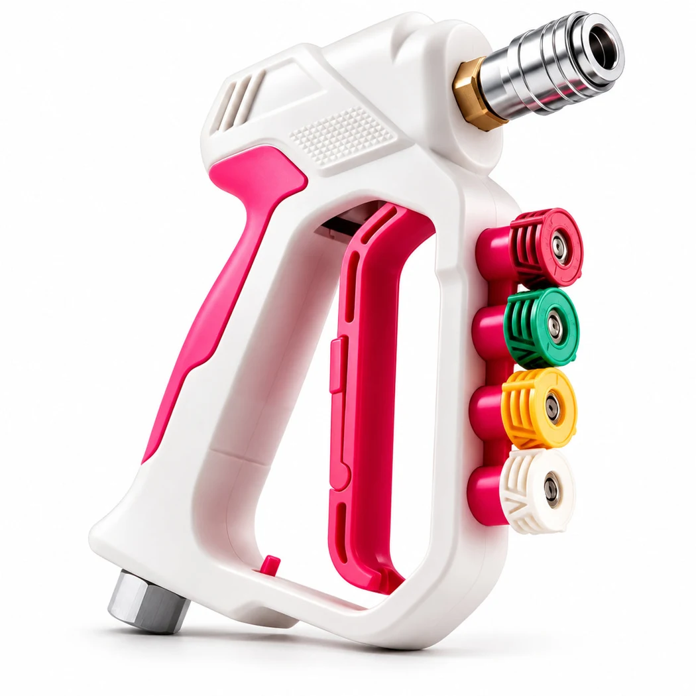
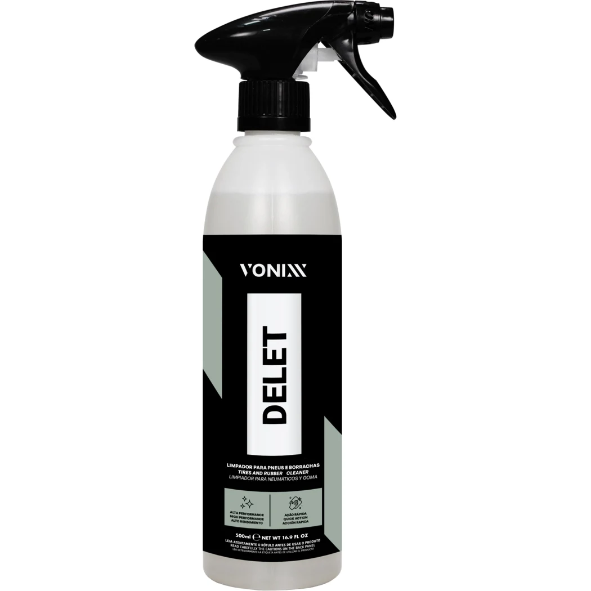
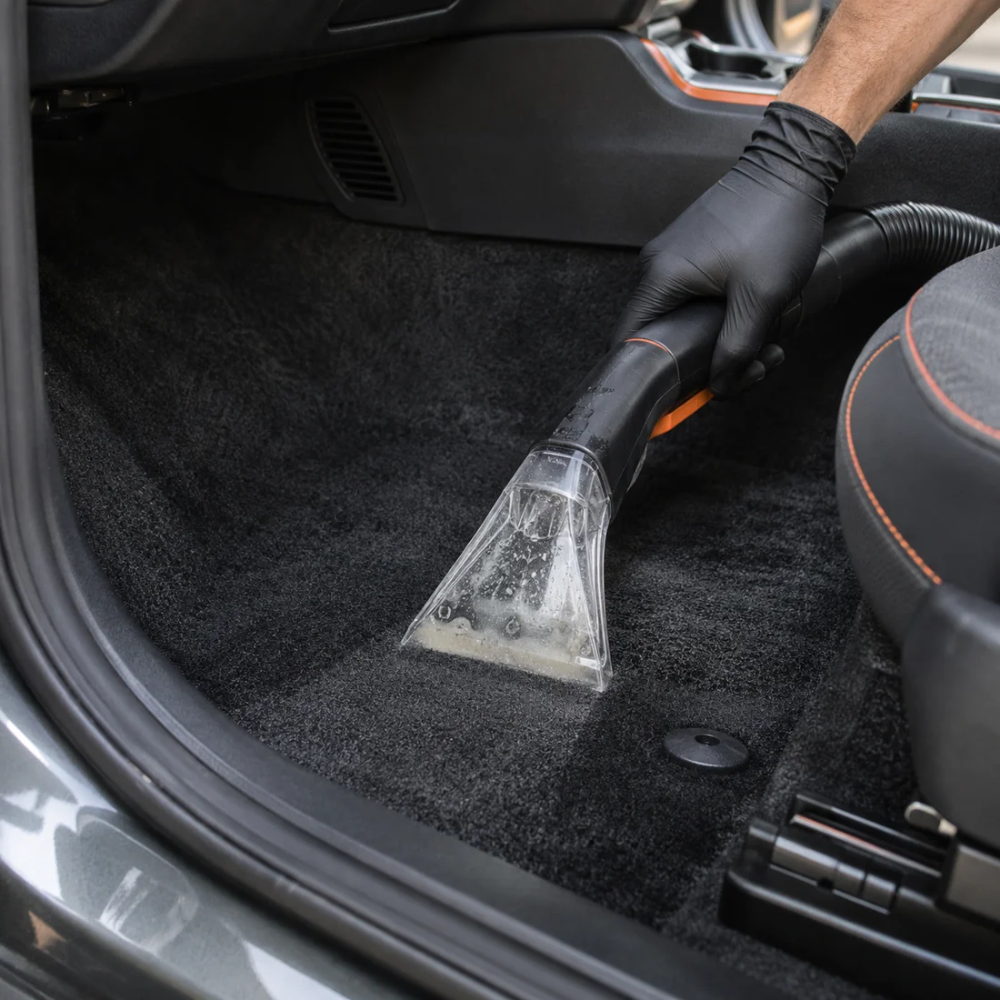

Wash & foam
Snow Foam Cannon
Loosen surface dirt before the contact wash.
Collection previewExplore product 01 / 06Illustrative application
01 / 06Illustrative application
Six views to explore. Swipe on mobile or select a photo.
Vonixx V-Floc Shampoo
V-Floc is a pH-neutral, lubricating shampoo for the contact-wash stage. Mix it as directed, work from the top down with a clean mitt and rinse away the solution.
Preview only. Price, final model and delivery details will be confirmed before ordering opens.
A regular wash needs more than foam: the mitt should move smoothly as it lifts dirt.
An easier-to-follow maintenance wash with the right product between the mitt and paint.
Find your routine
Preparation, application and the finishing touch.
01Pre-rinse loose contamination. The manufacturer’s bucket example is about 10 mL in 4 L of water.
 02
02Use a clean microfiber mitt and light, controlled passes. Keep the mitt clean as you work.
 03
03Remove all shampoo with water, then dry with an appropriate towel or blower.
Manufacturer bucket example: approximately 10 mL in 4 L of water. Adjust only as the label directs.
Product photography is combined with illustrative application scenes, including AI-generated images. These explain the routine and do not represent customer results. Follow the supplied label and equipment instructions.
Regular exterior washing with a microfiber wash mitt.
Adding it to a windshield washer tank or washing over loose grit.
| Product type | Concentrated car wash shampoo |
|---|---|
| Surface | Vehicle exterior |
| Reference sizes | 500 mL / 5 L |
| Dilution | Follow the label for your application |
No. This is an exterior wash shampoo, not windshield washer fluid.
The reference product supports foam-cannon use. Follow the bottle dilution and equipment instructions.
This upcoming product does not have a confirmed price or launch date. TorqueBox will confirm the final item and delivery details before opening orders.
No TorqueBox reviews for this upcoming product yet.
Loosen surface dirt before the contact wash.
Collection previewExplore productLift away rinse water with less wiping.
Collection previewExplore productAdd water-repellent protection during the final rinse.
Collection previewExplore product
 6 photos
6 photos
Lift away rinse water with less wiping.
Collection previewExplore product
 6 photos
6 photos
Put the rinse exactly where you need it.
Collection previewExplore product
 6 photos
6 photos
Loosen surface dirt before the contact wash.
Collection previewExplore product
 6 photos
6 photos
Clear trapped water from the gaps a towel cannot reach.
Collection previewExplore product6 photos
Help dirt glide away during your regular wash.
Collection previewExplore product 6 photos
6 photos
Start lifting stubborn road film before hand washing.
Collection previewExplore product 6 photos
6 photos
Lift everyday cabin grime from the surfaces you touch.
Collection previewExplore product 6 photos
6 photos
Clear everyday haze from automotive glass.
Collection previewExplore product 6 photos
6 photos
Add water-repellent protection during the final rinse.
Collection previewExplore product
 6 photos
6 photos
Refresh the gloss between full detailing sessions.
Collection previewExplore product
 6 photos
6 photos
Give your tire dressing a cleaner starting point.
Collection previewExplore product
 6 photos
6 photos
Lift the road grime that hides your wheels.
Collection previewExplore product
 6 photos
6 photos
Bring back a deep, glossy sidewall finish.
Collection previewExplore product 6 photos
6 photos
Target iron contamination a regular wash can leave behind.
Collection previewExplore product

6 photosTackle stubborn grime with the right dilution.
Collection previewExplore product